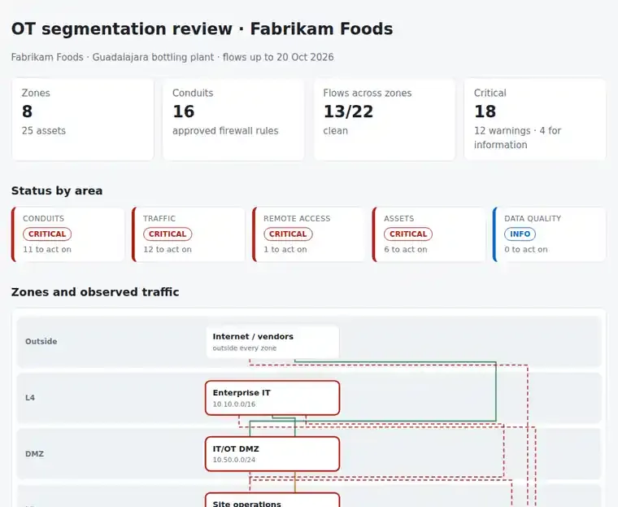

En una red de planta los caminos de riesgo casi nunca son los del diagrama: una regla de la puesta en marcha que años después sigue permitiendo todo desde la oficina hacia los servidores de planta, un PC de finanzas que lee un PLC con Modbus para un informe, un proveedor que entra por RDP directamente a un HMI. Eso es lo que busca el laboratorio de segmentación que acompaña a este post. Es un laboratorio, no una instalación real: una planta embotelladora inventada con 8 zonas, 25 activos, 16 conductos y una semana de flujos, con los problemas puestos a propósito.
La causa es que las reglas, el inventario y el tráfico real cuentan cada uno una historia distinta; una regla temporal de una actualización caducada hace un mes puede seguir pasando tráfico. El laboratorio los pone juntos y los compara con el modelo Purdue, que ordena los sistemas de planta en niveles desde las máquinas hasta la oficina, y con la idea de zonas y conductos de IEC 62443, que agrupa los sistemas en zonas y controla cada enlace entre ellas.
Protocolos de controlador desde L3 o superior y un sistema de seguridad alcanzable desde control
Las comprobaciones señalan reglas que se saltan la DMZ o un nivel, protocolos de controlador desde L3 o superior, protocolos de administración en claro, equipos OT hablando con internet, accesos remotos que no empiezan en el jump host (el único servidor de entrada para las sesiones remotas) y el sistema de seguridad alcanzable desde control.
Las comprobaciones de activos y datos añaden equipos que no están en el inventario, activos fuera de la subred de su zona, Windows sin soporte en OT y zonas sin responsable. El informe dibuja un diagrama Purdue coloreado por estado, una matriz zona a zona y firewall-proposal.csv, que dice permitir, revisar, redirigir por la DMZ o bloquear para cada servicio observado.
Cómo usarlo con datos reales
Funciona con Python y solo la librería estándar, con 16 tests y un runbook para la revisión de segmentación. Las zonas, el inventario y las reglas de firewall se exportan a CSV, junto con una semana de flujos del firewall o de NetFlow. La propuesta se revisa con la planta antes de bloquear nada, y cada cambio pasa por CAB con vuelta atrás.
De dónde sale
Se apoya en años dando soporte a centro de datos e integración IT-OT: switches y routers Cisco, salas de comunicaciones y racks, firewalls FortiGate, proveedores de conectividad, pruebas de DR/BCP y cambios por CAB con plan de vuelta atrás. Ese trabajo me enseñó que un cambio de firewall en planta solo es seguro cuando sabes qué tráfico pasa de verdad. Ahora estudio zonas y conductos de IEC 62443, y este laboratorio es mi forma de practicarlo.
¿Quieres llevarlo a tu entorno o adaptarlo a tu caso? Escríbeme y lo vemos.
Tech Career Lab · newsletter
¿Te ha servido? Cada dos semanas envío una idea práctica para perfiles IT: LinkedIn, proyectos, networking y procesos de selección.
Apúntate y llévate las 33 ideas →